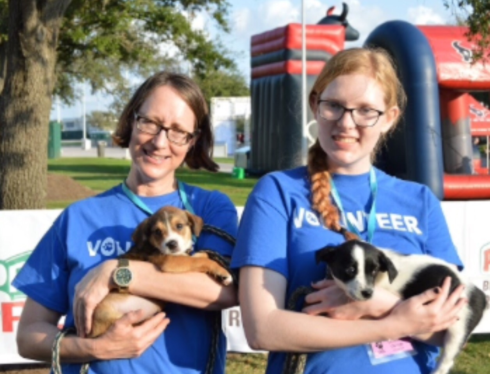
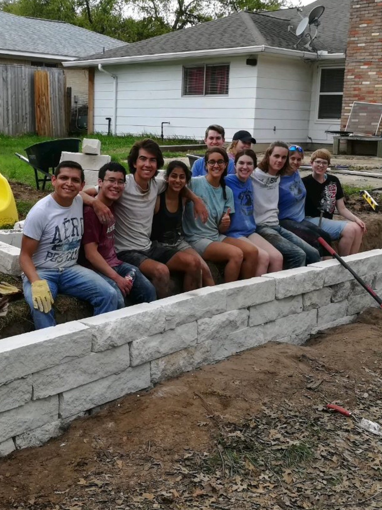

Service has been an important part of my life for a long time. A high school project concerning the Houston SPCA as a non-profit organization and my love of dogs led me to volunteer at the shelter, working with the large dogs to provide basic care, facilitating adoptions and educating children about animal welfare and the shelter. The lack of volunteer trainers in the shelter led me to become a Large Dog Trainer, where I trained more than 50 volunteers on dog behavior and the procedures of the shelter. More information about this great organization can be found on the Houston SPCA website .
In College Station, I have found it rewarding to volunteer in the Big Event, which is a large-scale one-day volunteering event in which various organizations help the College Station community through projects. In my experience, it’s been a great way to help the local community while becoming closer to the other members of the organization. More information about the event can be found on the Big Event's website.
